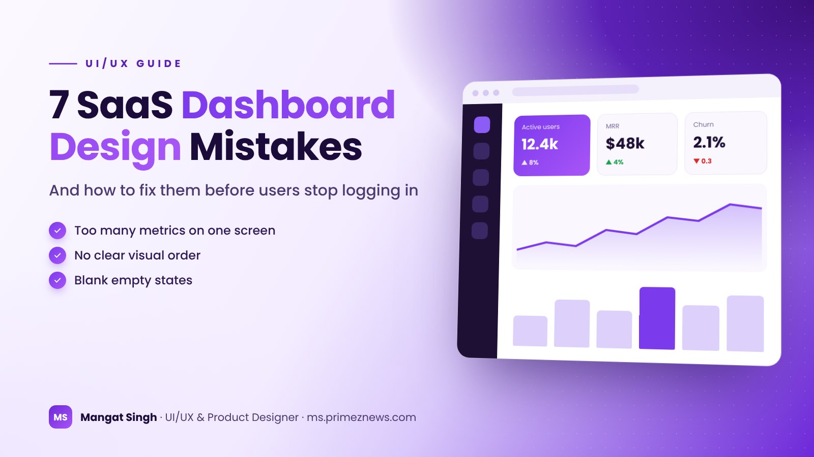

7 SaaS Dashboard Design Mistakes (and How to Fix Them)
Users ignoring your SaaS dashboard? Seven common dashboard design mistakes I keep seeing, and the simple fixes I'd make instead.

Your team spent weeks building the dashboard. It has charts, filters, a dark mode. And yet customers log in, glance at it, and go straight to the one table they actually need. Or they export everything to Excel.
That's not a user problem. It's a design problem, and it's very common.
I've designed dashboards, admin panels and web apps for startups and institutions over 8+ years. Most of the dashboards I'm asked to fix have the same handful of issues. Here they are, with what I'd do instead.
First, what is a dashboard actually for?
Nielsen Norman Group describes a dashboard as a single-page view that gives "at-a-glance information", much like the dashboard in a car (NN/g). The same article splits them into two kinds:
- Operational dashboards help people act on something time-sensitive (orders stuck, a server down, tickets overdue).
- Analytical dashboards help people study trends and make decisions that aren't urgent.
Many dashboards fail because nobody decided which one they were building. Keep that in mind as you read the list.
Mistake 1: Showing every metric you have
This is the big one. The database has 40 numbers, so the dashboard shows 40 numbers.
Eleken, a design agency, points to Miller's law here: people can hold roughly "five to nine chunks of information" in working memory at once. A screen with 20 or 30 widgets makes users tune out. Their advice is to focus on 3–5 core KPIs rather than 20 line charts (Eleken, updated Dec 2025).
Fix: Ask each user role one question: "What do you need to know in the first ten seconds after logging in?" Those answers become the top row. Everything else moves to a detail page.
Mistake 2: No clear visual order
When every card is the same size and colour, nothing stands out. The eye has nowhere to start.
Eleken notes that the top-left and centre get the most attention, and the bottom-right gets the least (Eleken). UXPin gives similar advice: put the most critical KPIs at the top or left, and separate primary metrics from secondary ones (UXPin, Jun 2026).
Fix: Pick one hero number per role. Make it bigger. Group related cards together, with clear spacing between groups.
Mistake 3: Pie charts, gauges and 3D everything
They look nice in a pitch deck. They're hard to read in daily use.
NN/g explains that our eyes compare length and position quickly and accurately, which is why bar charts and line charts work so well. The article says pie charts "should be avoided most of the time", discourages gauges and treemaps for simple actionable dashboards, and shows how 3D charts distort values (NN/g).
Fix: Bar charts to compare things. Line charts to show change over time. A plain number with a small up/down indicator for single KPIs. That covers most SaaS dashboards.
Mistake 4: Letting colour do all the work
Red for bad, green for good, and nothing else. Two problems.
First, NN/g notes that up to 4.5% of the general population has some form of colour blindness (NN/g). Second, a rainbow of category colours turns into noise fast.
Fix: Use colour for meaning, not decoration. Keep most of the screen neutral and save strong colour for things that need attention. Add labels, icons or arrows so the meaning doesn't depend on colour alone, as UXPin also recommends (UXPin).
Mistake 5: One dashboard for every user
An admin, a team manager and a regular user don't need the same screen. When they all get one, it's either too crowded for some or too thin for others.
Fix: Map your roles before designing anything. Often you need two or three tailored views, not one "flexible" dashboard with 15 filters. Filters are a sign the design didn't decide.
Mistake 6: Forgetting the empty state and the "last updated" time
Two small things that quietly kill trust.
A brand-new user signs up and sees a grid of zeros and empty charts. That's the worst possible first impression. Design that first screen on purpose: explain what will appear here and give one clear first action ("Connect your store", "Add your first project").
And show when the data was refreshed. Eleken notes that a visible "Last updated" timestamp can quietly reinforce reliability (Eleken). If people doubt the numbers, they stop using the dashboard and go back to spreadsheets.
Mistake 7: Putting everything on one screen instead of drilling down
Some teams try to fit detail tables, every chart and every filter on the home view. Then it scrolls forever.
UXPin recommends progressive disclosure: start with a high-level summary and let users expand into detail when they need it (UXPin).
Fix: Summary on top, click a card to see the breakdown, click a row to see the record. Three levels is usually enough.
It's also worth asking whether some of this belongs in a dashboard at all. Eleken suggests that a scheduled email summary or an alert can sometimes do the job better (Eleken). If a manager only needs one number every Monday, send it to them.
A quick dashboard checklist
Before you hand designs to developers, check:
- Each user role has a defined "first ten seconds" question.
- The top row has 3–5 KPIs, not 15.
- The most important number is visually the biggest.
- No pie, gauge or 3D chart without a strong reason.
- Colour is never the only signal.
- The empty state is designed, with one clear first action.
- Data freshness ("Last updated") is visible.
- Detail lives one click away, not on the home screen.
How I approach this in my own projects
In my Dashboard Design for a Project Management Web App project, the work starts with the same questions above: who opens this screen, and what they need to see first. You can see that project on my Behance.
The RBU Portal, an education web app for Rayat Bahra University, is a good example of why roles matter. A university portal serves different kinds of users, and each one comes with a different task. Planning those views separately is what keeps a portal like this usable. Rohit Sharma, the founder, shared a testimonial about the project on my website.
FAQ
How many KPIs should a dashboard show?
There's no fixed rule, but for the main view, 3–5 core KPIs per role is a good starting point. Put everything else on detail pages.
Should I design the dashboard or the landing page first?
If you already have users, start with the dashboard. That's where they spend their time and decide whether to keep paying. The landing page brings people in; the dashboard keeps them.
Can I use a ready-made admin template?
Yes, for internal tools it can save time. For a customer-facing SaaS product, treat the template as a component library, not as the design. The layout and the KPIs still need to come from your users' actual tasks.
Is your dashboard being ignored?
Send me a screenshot of your current dashboard (or a rough idea of what your product needs). I'll point out the two or three changes that would make the biggest difference, and if it makes sense, share a free first concept so you can see the direction.
- Portfolio: ms.primeznews.com
- Email: rwd.mangat@gmail.com
Mangat Singh, Senior UI/UX & Product Designer, Chandigarh
Sources
- Nielsen Norman Group: Dashboards: Making Charts and Graphs Easier to Understand (Page Laubheimer, Jun 2017)
- Eleken: Why Users Ignore Dashboards (and What to Do Instead) (updated 22 Dec 2025; design agency)
- UXPin: Dashboard Design Principles: The Definitive Guide (updated 24 Jun 2026; design tool vendor)
Senior UI/UX & Product Designer with 8+ years of experience designing user-centric, SEO-friendly web & mobile products.
Work with me